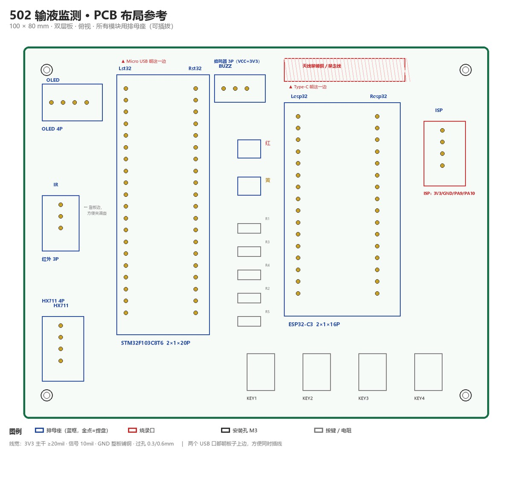
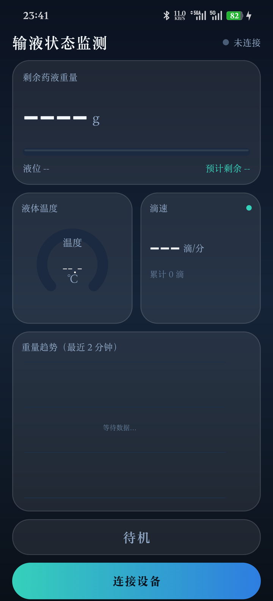

输液状态无线监测装置（受托开发）
三参数输液监测装置：液体温度（DS18B20 防水探头）、剩余药量（1 kg 悬臂梁 + 24 位 HX711）、滴速（红外对射 + 外部中断）；OLED 中文界面 + 黄/红两级声光报警，经设备 AP 直连 Android 客户端远程查看。

系统接线原理图：STM32 居中 + 9 个外设模块 + 双电源方案
Overview
它做了什么
- 称重链路用标准砝码组标定：SCALE = 741.6 counts/g、线性度 0.14%、五点复核最大偏差 ±0.1 g——对照 ±2 g 指标余量 20 倍。
- 13 段分阶段固件（01 串口心跳 → 13 整机 v2），每段独立可编译可烧录；其中 10 号工程「接线自检」可一次上电验证全部接线。13 个工程 0 错 0 警。
- 7 种工况报警矩阵 + R 位掩码上报（1/2/4/8/16/32）；黄预警 / 红报警，蜂鸣器 + 双 LED。
- Android 客户端自绘控件（GaugeView / LevelBarView / TrendView）：剩余克重大数字主视觉、温度表盘、滴速卡与 2 分钟趋势图。
- 上报层隔离在 report_tcp.c——可整体替换为 MQTT 而不动业务逻辑。
Hardware
硬件方案与选型
量程从精度反推：0.05%FS 下 5 kg 传感器分辨率约 2.5 g——会把 ±2 g 指标吃光；1 kg 传感器分辨率约 0.5 g，留出真实余量，因此定 1 kg。调试中还发现 OLED 的 I2C 需要 4.7 kΩ 上拉、蜂鸣器须改 3.3 V 供电，整机才稳定。

Demo
App 与 OLED 界面


Implementation
关键实现
标定方法论
标准砝码组（5/10/20/20/50 g）标定 → SCALE = 741.6 counts/g、线性度 0.14%。并如实记录了真实教训：用水初标 802.0，秤架重装后实测 742，差 8%——由此定下铁律「装盒后必须重标」。
分阶段固件
从串口心跳到整机 v2 的 13 段递进固件，每段保持小而独立可验证；专用「接线自检」工程一次上电验证全部接线。整机固件 29,480 B / 32 KB（90%）。
可替换上报层
全部联网逻辑收在 report_tcp.c 一层之后——今天是局域网 TCP，若需要云平台，约 2–3 天可整体切换 MQTT，业务代码不动。
诚实的验证分级
交付文档明确区分「上板验证 / 编译通过 / 待联调」，并主动写明局限：局域网直连 ≠ 云平台；液滴成线时光学测滴速存在原理性失真；开机去皮有 ±0.x g 残差。未验证的一律不写「已达标」。
Results
指标达成
| 指标项 | 实测 | 状态 |
|---|---|---|
| 称重精度 | 复核最大偏差 ±0.1 g（指标 ±2 g） | PASS |
| 液体温度 | DS18B20 防水探头，上板验证 | PASS |
| 滴速 | 原理验证通过；整机联调数据待最终采集 | PENDING |
| OLED 中文界面 | 88 字字库，逐页轮转刷新 | PASS |
| 两级声光报警 | 7 工况矩阵，黄/红，蜂鸣器 + 双 LED | PASS |
| 无线传输 | AP + TCP，App v3 已连通渲染 | PASS |
状态口径遵循项目自身的验证分级（上板验证 / 待联调）；滴速整机数据将在最终联调完成后更新。
Debug log